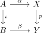

relative cw complex and fibre of a serre fibration as zero groups
Proposition
Let $D \subseteq \mathbb{N}$ be a set on natural numbers, $A \hookrightarrow B$ a CW Pair, where $B$ only contains \(d\)-cells for $d \in D$. Suppose $p: X \rightarrow Y$ is a serre fibration, such that
\begin{align*}
\pi_{d-1}(F,f) = 0
\end{align*}
for the long exact sequence of a serre fibration
Then every lifting problem

has a solution
Let
Proof
restatement of